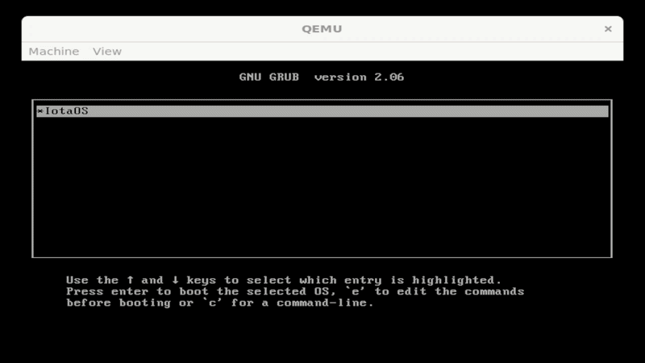

IotaOS¶
IotaOS is a Monolithic Kernel based operating system designed for embedded systems and IoT devices. It provides a lightweight and efficient platform for running applications on resource-constrained hardware.
{kind=link}

A demonstration of the IotaOS v0.1.1 shell executing a custom .ib application.¶
Key Features¶
Monolithic Kernel architecture: Allows for better modularity and separation of concerns. This design enables developers to create custom drivers and services without affecting the core kernel.
Filesystem: Includes a simple filesystem that supports basic file operations such as reading, writing, and deleting. It is designed to be lightweight and efficient, making it suitable for embedded systems with limited storage capacity.
Executor: Responsible for managing the execution of tasks and processes. It provides scheduling and context switching capabilities, allowing multiple tasks to run concurrently on the system.
Custom executable format: Supports a custom executable format optimized for embedded systems. This allows for efficient loading and execution of applications, while also providing support for features such as dynamic linking and shared libraries.
Iosh¶
Iosh is a shell interface for IotaOS that provides a command-line interface for interacting with the operating system. It allows users to execute commands, manage files, and perform various system operations. Iosh is designed to be simple and user-friendly, making it easy for developers and users to interact with IotaOS. It provides a set of built-in commands for common tasks, as well as support for custom commands that can be added by developers. Iosh is an essential component of the IotaOS ecosystem, providing a convenient way for users to interact with the operating system and manage their applications.
Here is the set of built-in commands in Iosh:
Command |
Description |
|---|---|
|
Shows a list of available commands and their descriptions |
|
Lists files in the ramdisk |
|
Executes an .ib file (e.g. ‘./test.ib’) |
|
Shows physical memory usage information |
|
Shows the kernel and shell version |
|
Clears the terminal screen |
|
Reboots the system |
|
Exits the shell and shuts down the system |
Added in version 0.1.0-beta.2: Iosh was added in this version and I am not listing every change version. v0.1.0-beta.8 is the final version in beta.
Changed in version 0.1.0-beta.8: (based off of the shells local version) Moved to a .ib file successfully.
Changed in version 0.1.1: (global) Full shell from the 0.1.0-beta.24 release of the kernel.
See also
For more information on Iosh and its commands, please refer to the IotaOS documentation and the source code available on GitHub.
Iosh You’ll find the source code for Iosh in the IotaOS documentation, which provides a detailed implementation of the shell interface and its built-in commands.
.ib files¶
.ib files are a custom file format used in IotaOS for storing applications. These files are designed to be lightweight and efficient, making them suitable for embedded systems with limited storage capacity. The .ib file format allows developers to easily make C (and assembly) applications for IotaOS, and provides support for features such as storing your C (or assembly) app as a .ib file, which can then be executed on the IotaOS platform. This format is optimized for the unique requirements of embedded systems, ensuring that applications can run efficiently while minimizing resource usage.
.ib header¶
The .ib (Iota Binary) header is a crucial component of the .ib file format used in IotaOS. It contains metadata about the application, such as the magic number (0x4249), code size, header size and entry point. The header also includes information about the ib_loader format version and other metadata required for proper execution. This allows the operating system to manage and execute the application effectively. The .ib header is designed to be compact and efficient, ensuring that it does not consume unnecessary resources while providing essential information for the execution of applications on the IotaOS platform.
Here is an example of a .ib header structure:
crt0.s (0.1.0-beta.17 version (format version 1))¶1/* --- IOTA BINARY (``.ib``) HEADER --- */
2/* This data is at Byte 0 */
3.short 0x4249 /* magic 'IB' */
4.short 1 /* version */
5.long 16 /* offset to code */
6.long bin_end - . /* total size */
7.long 0 /* entry point */
Added in version 0.1.0-beta.17: The .ib file format and its header structure were introduced in this version of IotaOS. This addition allows developers to create and manage applications in a standardized format, enhancing the overall functionality and usability of the IotaOS platform.
Table of format versions and code examples:
format version |
code example |
|---|---|
1 |
extract from crt0.s (0.1.0-beta.17 version (format version 1)) |
Call for Contributors!¶
IotaOS v0.1.1 is officially live! You can go to the GitHub repository and download the latest release right now. If you want to help out, here is what I currently need:
Bug Reports: If you discover a bug, please open an issue on the GitHub page so I can fix it as soon as possible!
Thanks again for your support and interest in IotaOS. I hope you enjoy using it as much as I enjoyed making it! ^_^